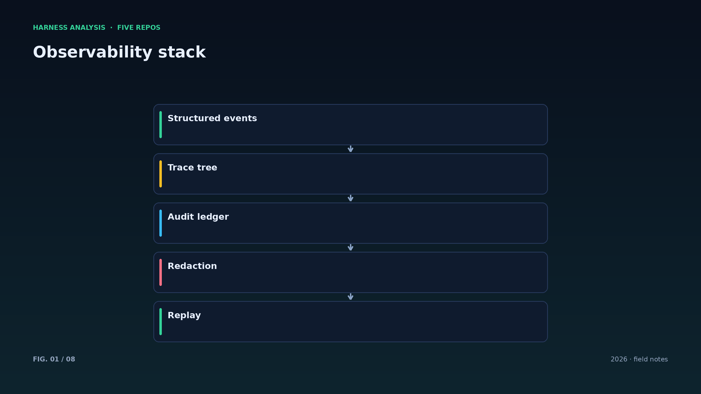
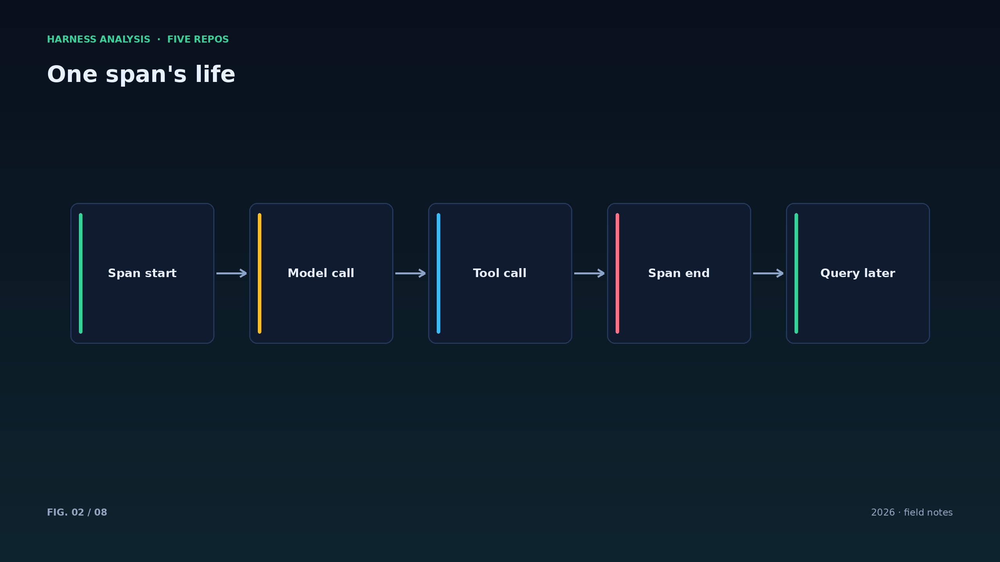
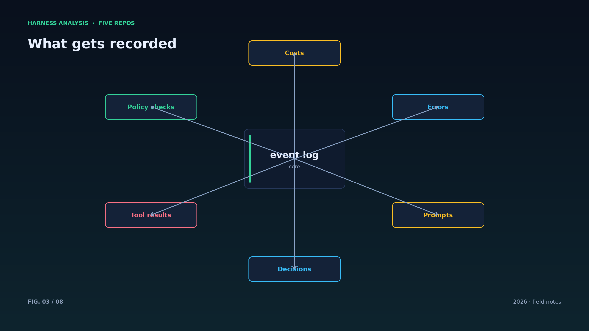
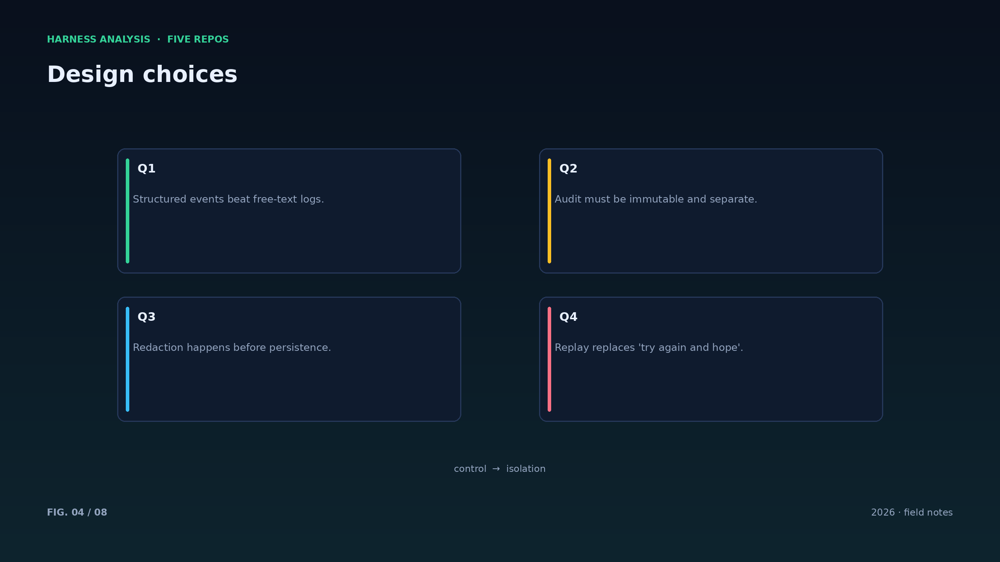
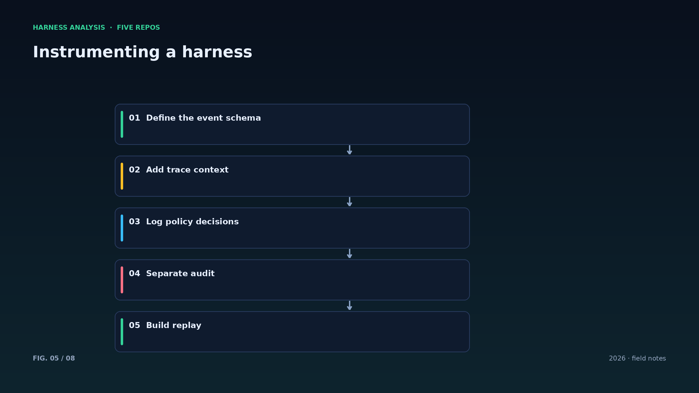
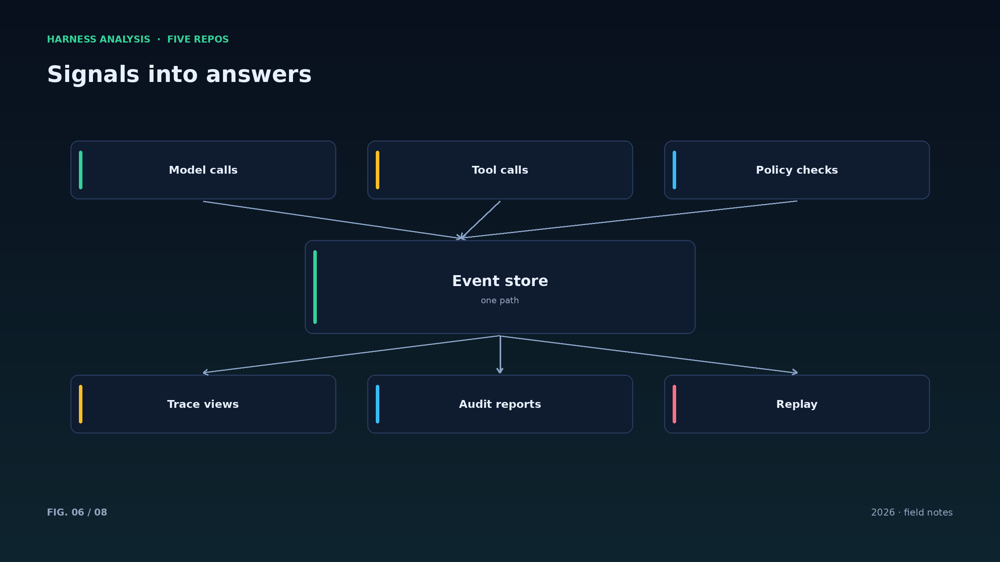
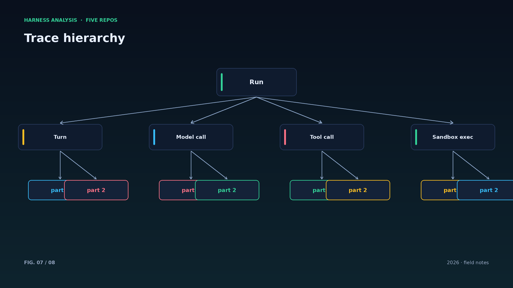
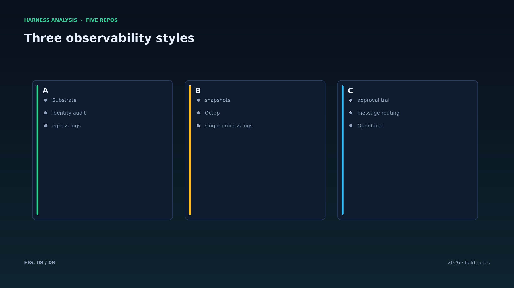

harness analysis · 09
可观测性与审计：让每次决策都有黑匣子
Observability and Audit: A Black Box for Every Decision
agent 出问题时，最重要的不是日志多少，而是“它当时看到了什么、做了什么决定”能否被还原。这一篇对照三个项目的可观测性设计。
可观测性的核心是事件而不是指标：每次模型调用、每个工具参数与结果、每次权限判断都应是结构化事件，带时间戳与父子关系，形成一棵调用树。
Substrate 在这条路上走得最远：身份、网络与执行都带审计记录，快照与恢复也留下痕迹。Octop 把会话、工具审批与消息路由统一在单进程里，日志天然聚合。opencode 则把会话做成服务，多端共享同一份可观测数据。
审计与调试要分开：审计是不可变、长期保留、记录“谁批准了什么”的账本；调试日志可以滚动清理。写入前必须脱敏——密钥、个人数据、用户内容里的敏感字段。
回放是最终形态：把工具结果从日志回放、模型调用用录像重演，就能离线复现一次失败而不产生副作用。评测体系可以直接复用同一套机制。
指标要能回答决策问题：延迟拆成模型、工具、排队三段；成本拆成输入、输出、缓存；错误按类型分桶。聚合图表不如可下钻的事件。
隐私与审计天然冲突：能看见一切才审计得清，但看见一切就存下了敏感数据。折中是分层保留：敏感原文短期存、摘要长期存。
日志 schema 要版本化：字段增删带版本号，回放工具才能兼容历史数据。
采样要有策略：高频低价值的工具调用可以采样，关键决策与权限变更必须全量。
把“用户可读的解释”当作一等输出：同一份事件流，既要能给工程师看，也要能给业务方解释发生了什么。
Architecture figures








ENGLISH
Observability and Audit: A Black Box for Every Decision
When an agent fails, the question is not how many logs exist but whether you can reconstruct what it saw and why it decided. This piece compares three designs.
Observability is about events, not metrics: every model call, tool argument and result, and policy decision should be a structured event with timestamps and parent links, forming a call tree.
Substrate goes furthest: identity, network and execution all leave audit records, and snapshots and resumes leave traces. Octop unifies sessions, tool approvals and message routing in one process, so logs aggregate naturally. opencode turns a session into a service, so many clients share the same observability data.
Audit and debugging are different products: audit is an immutable, long-lived ledger of who approved what; debug logs can rotate. Both need redaction — keys, personal data, sensitive fields in user content.
Replay is the end state: replay tool results from logs and recorded model calls, and a failure can be reproduced offline without side effects. Evaluation can reuse the same machinery.
Metrics must answer decisions: split latency into model, tool and queue; split cost into input, output and cache; bucket errors by type. Drillable events beat aggregate charts.
Version the log schema: add version numbers to field changes so replay tools can digest historical data. Sampling needs policy too — sample noisy tool calls, never sample decisions or permission changes.
Treat a human-readable explanation as a first-class output: one event stream must serve engineers debugging and stakeholders asking what happened.